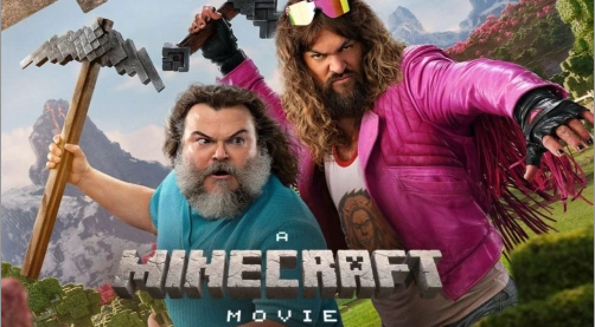
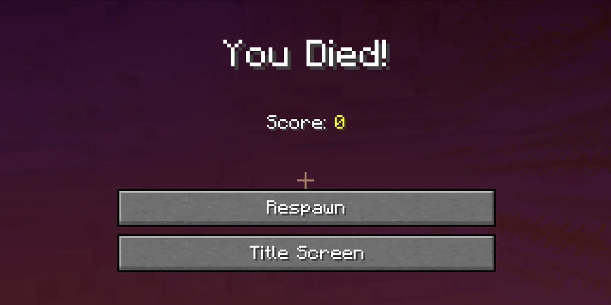
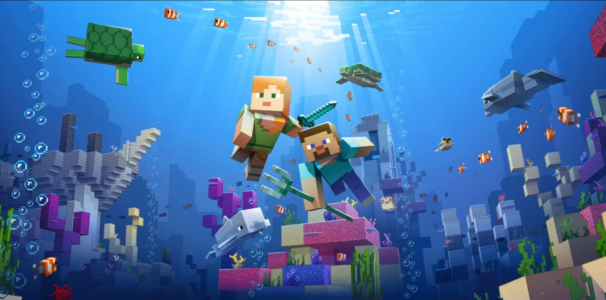

친구와 함께 시작한 네모난 세상의 모험
오랜만에 친구와 함께 시작한 마인크래프트.

우리가 자라는 동안 수많은 업데이트가 이루어졌지만, 이 네모난 블록으로 이루어진 세상은 여전히 설렘을 준다. 우리의 목표는 다른 차원에 사는 거대한 용을 물리치고, 우리만의 마을을 만드는 것.
이 게임 속 세계는 실제 사람의 크기 기준으로 환산하면 지구보다 몇 배는 넓다고 한다. 그 드넓은 세상에 아무것도 없는 상태로 태어나 돌과 나무를 모으고, 도구를 만들고, 결국 철로 된 장비를 갖추기까지 걸린 시간은 고작 두 시간 남짓이었다.
하지만 아직 충분한 자원을 모으지 못했기 때문에 원래라면 더 오래 땅속에서 광물을 캐야 했다. 그래도 식량도 구할 겸, 어릴 적 기억과는 꽤 달라졌을 세상을 먼저 둘러보기로 했다.
우리는 지상으로 올라와 달리기 시작했다.
새롭게 추가된 다양한 지형과 동물들, 곳곳에 자리 잡은 마을들, 그리고 바닷속을 가득 채운 산호와 돌고래들까지.
오랜만에 보는 마인크래프트의 세상은 눈과 귀를 즐겁게 했다.
친구는 정글에서 데려온 앵무새를 어깨에서 내려놓을 생각이 없어 보였다.
첫 번째 탐험의 마지막 밤.
이제 잠을 자서 밤을 넘기고, 가득 찬 짐을 정리할 수 있는 집터를 찾을 차례였다. 마인크래프트에서는 침대에서 잠을 자면 밤을 바로 아침으로 넘길 수 있기 때문이다.
.
.
.
.

무슨 일이 일어났는지 짐작하기는 어렵지 않았다.
캐릭터가 죽은 뒤 덜덜 떨리는 화면, 나란히 부서져 있는 침대, 그리고 아직 흩어지는 연기.
마인크래프트의 대표적인 몬스터인 크리퍼가 다녀간 흔적이었다. 크리퍼는 플레이어 근처에서 조용히 다가와 갑자기 폭발하는 몬스터다.
‘그래, 게임의 마스코트답게 존재감을 확실히 드러내는구나…’
우리는 단지 부엌에서 견과류 두 봉지를 가져왔을 뿐이었다. 하지만 그 잠깐의 방심 사이에, 소리 없이 다가온 살아 있는 폭탄에게 허무하게 폭사하고 말았다.
문제는 그 다음이었다.
일단 사라져버린 앵무새를 추모해야 했고… 무엇보다 떨어뜨린 아이템을 찾아야 했다.
하지만 부활 지점 역할을 하던 침대가 폭발로 사라져버린 상태. 우리는 멀리 떨어진 어딘가에서 다시 시작하게 되었고, 원래 죽었던 장소를 찾을 방법이 사실상 없었다.
시간은 늦었지만, 이대로는 도저히 잠이 오지 않았다.
우리는 마지막 희망을 품고 각자 방향도 없이 다시 탐험을 시작했다.

그리고 약 10분쯤 지났을까.
모래를 사박사박 밟으며 걷던 해변에서 검게 부서진 구조물이 눈에 들어왔다.
“난파선…?”
마인크래프트의 바다에는 가끔 침몰한 배가 발견되는데, 그 안에는 보물이 들어 있을 때가 있다.
잠시 후,
“보물 지도다!”
친구를 불렀다.
우리는 다시 시작한 것과 다름없는 상태였기 때문에 나무를 모아 보트와 삽을 급하게 만들어 챙겼다.
지도에 표시된 위치에 도착했을 때는 이미 꽤 지친 상태였다. 그래도 바닷가 모래를 끝없이 파다 보면, 언젠가 상자가 나타난다는 생각 덕분에 지루할 틈은 없었다.
그때,
“여기!”
친구의 환호성이 들렸다.
기대에 부풀어 상자를 열어보니…
음.
어릴 적 내가 자랑스럽게 펼쳐 보인 그림을 바라보던 부모님의 마음이 이런 것이었을까.
엄청난 보물이라고 하기엔 조금 부족했지만, 그래도 오늘 하루의 끝을 장식하기엔 꽤 뿌듯한 결과였다.
상자 안에는 다이아몬드와 에메랄드, 물고기와 수정, 그리고 ‘바다의 심장’이라는 특별한 아이템이 들어 있었다.
이 아이템은 나중에 바닷속에서 자유롭게 활동할 수 있게 해주는 장비를 만드는 데 사용된다. 지금 당장은 인벤토리 한 칸을 차지하는 물건일 뿐이지만,
언젠가 바다 깊은 곳을 마음껏 탐험하게 될 미래와 앞으로 이 서버에서 펼쳐질 수많은 모험을 조용히 예고하는 것처럼 느껴졌다.